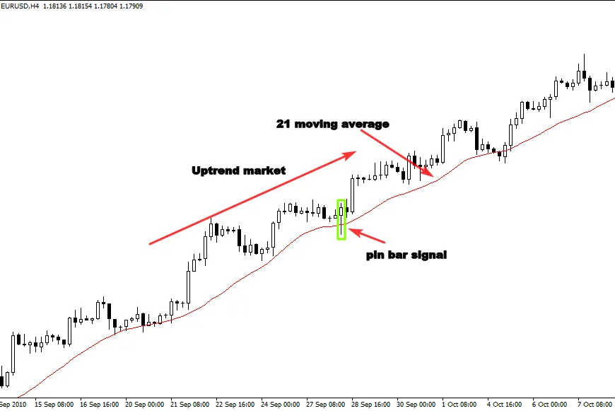

If you are a beginner trader, i highly recommend you to stick with the
trend, because pin bars that occur in trending markets offer good
trading opportunities with high risk/reward ratio.
When you master trading it with the rend, you can then move to trade
range-bounds markets or even counter-trends.
This strategy is simple, you start by identifying a clear uptrend or
downtrend, and you wait for a pin bar to occur after a pullback to
support or resistance level.
See the example below:
The figure below shows how this price action signal works if it is traded
with the trend, as you can see, the price was rejected from the
resistance level which indicates that the bears are still in charge of the
downtrend.
The formation of the pin bar indicates the end of the retracement
move, and the beginning of the impulsive move at the resistance level
in line with the downtrend.
This is a high-quality setup because all the following criteria are
respected:
1-The pin bar is well formed, and it is in line with the direction of the
market.
2-The rejection occurred in a major key level which represents a hot
point in the market (resistance level).
3-The risk to reward ratio is good, and it is worth trading.
Sometimes, even if the market is trending, we can’t draw support and
resistance levels, because prices move in a certain way which we can’t
spot static key levels.
If you are in this situation, you can use the 21-moving average which
will act as a dynamic support in an uptrend market and a dynamic
resistance in a downtrend market.
See the illustration below:
As you can see in the chart above, the market was trending down, using the 21 moving averages helps us to identify dynamic resistance levels, and high probability pin bar setups. See another chart below:
The 4-hour chart above illustrates how the 21-moving average could
help us find key points in the market.
When prices approach the moving average, the buying pressure takes
place in the market, and the price goes up.
The pin bar signal is clear on the chart, because the trend is bullish, the
price action setup has a bullish anatomy as well, and the rejection from
the 21-moving average is a confirmation signal to buy the market.
When we identify the trend, (uptrend or downtrend) and the level
(support or resistance).
And we find a pin bar near these levels in line with the direction of the
trend. The second step is to know how to enter the market based on
this candlestick pattern.
According to my experience, there are different entry options when it
comes to trading pin bars; it all depends on the candle anatomy, the
market conditions, and your money management strategy.
1-The aggressive entry option: this method consists of entering the
market immediately after the pin bar closes without waiting for a
confirmation.
This strategy will help you catch the move from the beginning, because
sometimes the price goes higher after the close of the pin bar, and if
you are not in the market, the trade will leave without you.
See the example below:
The chart above shows how an aggressive entry could help you to
execute your trade in the right time without being left by the market.
And as you see, we took this trade because we had three important
elements:
-The trend: The market was trending down, in this case we look for
selling opportunities.
The level: In this chart we had a support level that becomes resistance.
The signal: A clear pin bar was formed after the retracement back to
the resistance level.
When you have these three elements in the market, you just place
your trade after the close of the pin bar, and your stop loss above the
long tail. your profit target will be the next support level in case of a
downtrend.
These three elements are quite enough for you to find high probability
entries in the market.
The conservative entry option: this strategy consists of entering the
market after 50% of the range bar retracement.
This strategy sometimes will work and it gives you more than 5:1
risk/reward ratio, and sometimes the market will leave without you.
See the illustration below:
The illustration above gives us an idea about the power of conservative
entries, as you can see, this entry method helps us decrease our risks
and increase our rewards.
The trade above has more than 5:1 risk/reward ratio. One trade like
this every month is quite enough to generate a decent income. See
another chart below:
One of the drawbacks of this entry option is that the market
sometimes doesn’t retrace to 50% of the range bar, which will make
you feel frustrated because the market will move to the profit target
without you.
There is no wrong or right entry option, the both work great, but with
screen time and experience, you will be able to decide whether to
trade aggressively or conservatively.